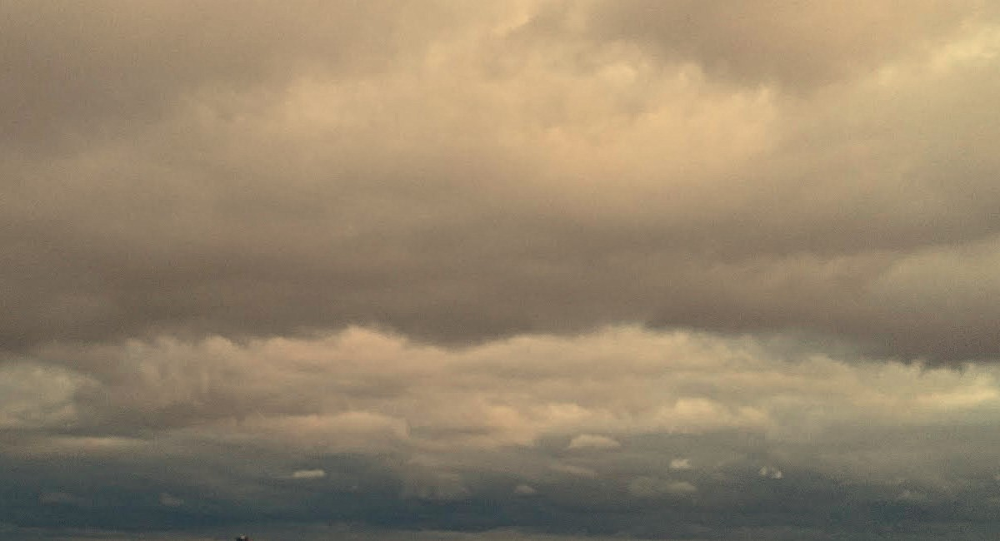

Lueurs Révélées - À toutes ces inconnues
Le troisième livre de mon recueil, intitulé “À toutes ces inconnues”, est une exploration poétique des rencontres éphémères qui jalonnent notre existence. Ces courts moments de complicité, ces sentiments qui divaguent éperdument avant de s’effacer en un instant, constituent le cœur de cette dernière section. À travers ces poèmes, je cherche à capturer l’essence de ces instants transitoires, ces lueurs qui brillent brièvement avant de disparaître, ne laissant derrière elles que des souvenirs flous et des émotions profondément ancrées dans ma mémoire.
Poèmes
Explorez Lueurs Révélées
Ce livre n'est qu'un infime fragment de Lueurs Révélées, un recueil en trois livres qui dévoile mes réflexions et émotions à travers la poésie. Pour en savoir plus sur l’ensemble du recueil, n’hésitez pas à cliquer sur le lien ci-dessous.
Lueurs Révélées - Livres
Plongez dans ce recueil et laissez-vous emporter par ces livres qui tentent de structrer un travail poétique bien trop chaotique. Des vers, des maux, voilà ce que vous trouverez en explorant tout ça...
À propos de moi

Gaël Maignan
Fondateur de l'Observatoire de l'Esprit Critique et étudiant en Sciences de l'Information et de la communication à l'Université Paris Panthéon Assas ainsi qu'en urbanisme à l'École des Ingénieurs de la Ville de Paris, je m'efforce de préserver un lien fort avec l'écriture et tout particulièrement avec la poésie...